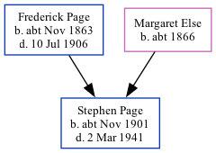

Stephen Ernest Page cNov 1901 - 1941
[ Home ] | [ Calendar ] | [ Surnames Index ] | [ Family History ]The child of Frederick Page (a bricklayer) and Margaret Else (a charwoman), Stephen Page, the third cousin once-removed on the father's side of Nigel Horne, was born in Folkestone, Kent, England c. Nov 19011 and baptized there at St Saviour on Nov 3, 1901. On Apr 2, 1911, he lived on 52 Albert Road in Folkestone4. During 1941, he was serving in the army (regiment: The Buffs (Royal East Kent Regiment); Rank: Company Quartermaster Serjeant; Service number: 6279670).
He died on Mar 2, 19412,3 and was buried at Aldershot Military Cemetery, Aldershot, Hampshire, England after Mar 2, 1941.
Parents
- Frederick Stephen was born c. Nov 1863
- Margaret Ann was born c. 1866
Citations
- England & Wales births 1837-2006 - Findmypast
- Commonwealth War Graves Commission Debt Of Honour - Findmypast
- World War 2 Allies Collection - Findmypast
- 1911 Census for England & Wales - Findmypast (was age 9 and the son of the head of the household)
Media
Stephen Ernest Page - Burial Record

England & Wales births 1837-2006 - BMD/B/1901/4/AZ/000439/136
Kent Baptisms - GBPRS/CANT/B/96104193
England Births & Baptisms 1538-1975 - R_884248705
Commonwealth War Graves Commission Debt Of Honour - GBM/CWGC/ROLLOFHONOUR/001526409
Army Roll of Honour 1939-1945 - GBM/WWIIARH/0062675
World War 2 Allies Collection - WW2/07051452
World War 2 Allies Collection - WW2/00062631
1911 Census For England & Wales - GBC-1911-RG14-04642-0327-4
Family Tree
Generated by Ged2Site. Last updated on Jul 20, 2025